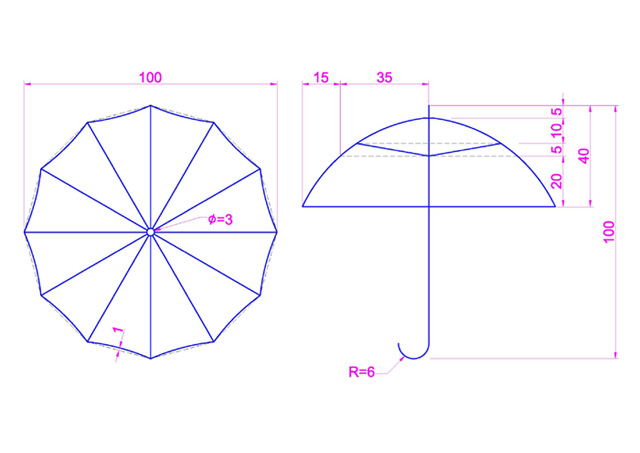

這一次的範例主要是想跟各位分享「斷面混成(LOFT)」的「導引(G)」功能(這個功能適用2007以上版本)，
在看了原廠 斷面混成 說明後覺得還蠻有趣的，在這裡特別做成範例跟大家研討分享，
有興趣的朋友可以練習看看(記得將你的完成品圖片PD上來)，當然也可以參考我的影片作法喔~
代碼:
導引
指定導引曲線，該曲線可控制斷面混成的實體或曲面的形狀。導引曲線是曲線或線，可透過加入額外線架構資訊到物件來近一步定義實體或曲面格式。您可以使用導引曲線來控制點如何與相應的斷面相符，以防止不必要的結果 (如產生的實體或曲面中的摺皺)。
請記得說明以下事項(參與練習的朋友將獲得 威望值+6):
1.3d成品圖片
2.建模所用到的指令(約略說明即可)
3.使用的AutoCAD版本
4.建模所需時間
5.您的意見補充
PDF範例下載:
https://app.box.com/s/gkwmwjidvwyohif7qonp
完成圖片：
影片展示：
[20091123補充]：
因考量到有些朋友可能是使用2006(含)以下的版本，這裡特別展示另一種方式「邊緣網面」EDGESURF指令!!
代碼:
說明：
選取定義網面的四條鄰接邊緣。邊緣可以是線、弧、雲形線或開放聚合線。邊緣必須在端點相接，以形成單一封閉迴路。
各位看倌可以參考以下影片方式來製作，當然做完之後別忘PO上來跟我們分享~
影片展示：
[20091127補充]：
以下為英文版介面影片展示：